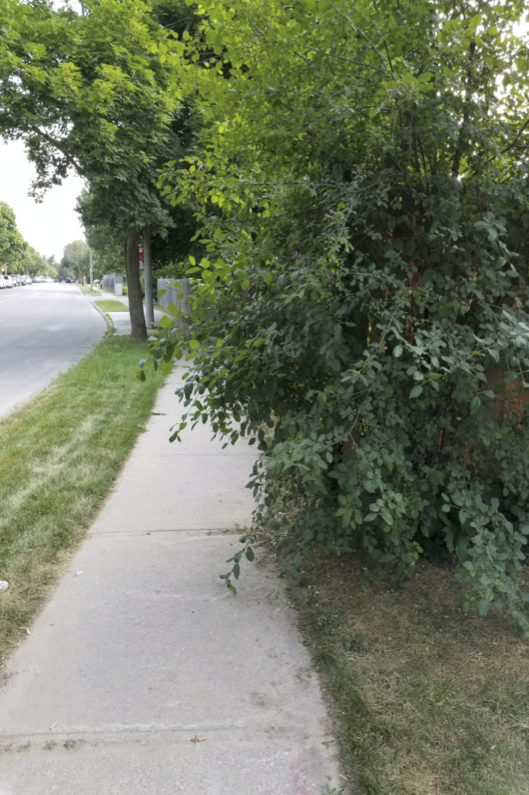
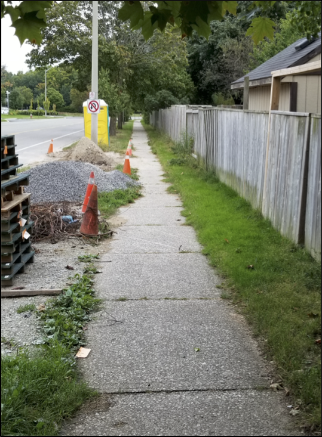
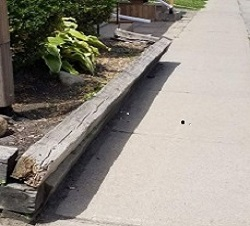

GEOG*2420 The Earth From Space (F25)
Lab Assignment 4: Lidar Data Analysis
Introduction
This lab introduces students to the processing of airborne laser scanning (ALS) data. ALS data are collected from airborne light detection and ranging (lidar) platforms and are in contrast to terrestrial laser scanning (TLS) lidar systems, that are mounted on tripods or ground-based vehicles. Although there are similarities in the lidar systems themselves, ALS and TLS systems are distinct because of their widely differing vantage points and both differ significantly from the imagery type data commonly produced by other types of remote sensing systems (e.g. optical and thermal remote sensing). lidar systems collect 3D point-clouds that are frequently applied in the creation of digital surface models (DSMs). As the cost of these systems and the data they produce continues to decrease, we have seen increasing adoption of lidar data sets in many fields. An understanding of how to process lidar data is essential for the modern remote sensing specialist.
Readings and Resources
The following materials can be used as background materials and to help in answering the assignment questions.
-
NEON Science YouTube channel. How Does Lidar Remote Sensing Work? Light Detection and Ranging
-
Campbell et al. 2022. An Introduction to remote sensing, Chapters 9 Lidar.
Before you begin
IMPORTANT INFORMATION: The computers in the Geography Undergraduate Computing Lab (Hutt 236) have QGIS installed. If you are planning to carry out these assignments on your own computer, then it is important that you have QGIS, with the Whitebox Workflows For QGIS plugin (See previous lab for details on its installation). This software is open-source, freely available, and works on Windows, MacOS, and Linux operating systems.
In addition to the software, you will need to download the data associated with this lab exercise from the CourseLink page under the Lab 4 directory. The data for this laboratory is quite large and will require substantial data storage. It is important that you backup all of the data for the lab assignment.
What you need to hand in
You will hand in a printed report summarizing the answer to each of the questions in the following exercise along with the necessary colour images. For each of the calculations in this lab, be sure to show your intermediate steps, explicitly stating units and any unit conversions.
Lidar Data Pre-Processing
Warning, the data that are used in this lab are quite large. Do not try to run this lab on your personal laptop if it does not have sufficient memory, available hard drive space, and processing power. If you find yourself in this situation, use the workstations in the undergraduate computing lab instead.
Also, you must decompress (i.e. unzip) the lab data files before you can carry out the lab.
QGIS is a wonderful software package for visualizing other types of remotely sensed data, such as satellite images, and while it can visualize 3D point clouds like lidar data, it's not particularly well suited to this task. For that, we need a different kind of software. Open a web browser and visit the website http://plas.io. This is a browser-based application for viewing lidar data that are stored in LAS files (*.las). Set the DENSITY slider to maximum. Press the Browse button at the top of the side panel and select the 1km174790476002017.las from your lab data directory (see note above about ensuring this directory is unzipped). This data set is a 1 km2 tile taken from the 2017-2018 Lake Erie lidar data set. It is situated within the heart of the City of London, Ontario and was collected during the spring of 2017, before the leaves were on the trees.
Now would be a good time for you to watch the NEON Science video on lidar listed in the Readings and Resources section of the Introduction, if you haven't already done so.
If you scroll further down the side panel, you will see that plas.io has defaulted to the RGB values for the Colorization and sets the Intensity Blending to 100% ("ALL INTENSITY"). For each return (backscattered point) of a lidar laser pulse, in addition to to recording the x,y,z coordinates of the backscattered point the system also records the intensity of the return. These intensity values are what are being rendered for the 3D point cloud at present. Adjust the Intensity Blending scrollbar to 0% (i.e. "ALL COLOR"). You'll notice that the point cloud disappears. This is because the colour data used to render the point cloud is currently being drawn from the RGB colours associated with each point. While lidar systems do not capture any colour information for the point measurements they make, it is common for lidar surveys to collect a set of air photos at the same time and these data are often used to associate RGB colours with each point. In the case of this particular data set, this was not done at the time of collection and so there are no RGB values stored with the points (thus they are being rendered black, like the background).
Select "Heightmap Color" under the Colorization drop-down menu. Each point will now be coloured based on elevation rather than RGB. You may experiment with different colour palettes (I prefer the one second from the right), and with the colourization scroll bar to adjust the minimum and maximum palette scaling, until you are satisfied with your rendering. Now minimize the side panel and experiment with zooming into and moving around the point cloud. Caution, this is a very large data file and rendering in 3D can be a computationally expensive operation. See the warning at the top of the page about using an appropriate computer to complete this lab. If your laptop does not have an adequate graphics card, your ability to navigate the point cloud will be severely compromised and you may even crash your system.
1.1. Provide a screenshot of your rendered 3D point cloud. Also, describe the site characteristics in detail. Notice that in order to get a better context of where exactly this tile of lidar data is in the world, you may use the Lidar tile footprint tool in the Whitebox Workflows QGIS plugin (Lidar processing toolbox) and overlay the output over top the OpenStreetMap layer. Call the output
tile_footprint.shp(note sometimes QGIS wants to use the default vector format as a GeoPackage, but we must force it to be a Shapefile output). Run the Lidar tile footprint tool, specifying 1km174790476002017.las as the input file, and once it has completed and displayed the vector polygon outlining the spatial extent of the lidar file, add the OpenStreetMap layer to QGIS by selecting Layer => Add Layer => Add XYZ Layer. (4 marks)
Open the file LidarInfoReport.html, located in the lab data directory, in a browser, by double-clicking it. This file is a report on contents and distribution of points contained within the lidar tile 1km174790476002017.las. It has been generated from the Lidar info tool. I would normally ask that you run the tool and generate the report yourself, but there is currently a bug with the QGIS plugin for WbW on Windows that may cause an error while running and so I have provided the file for you here.
1.2. Examinging the report, what is the total number of points contained in the LAS file? What are the minimum and maximum elevations (z-values) of the points? (3 marks)
Of particular interest to us are the three Point Returns Analysis tables (i.e. the Point Return Table, Point Position Table, and Point Classification Table). A lidar system emits many thousands of laser pulses every second. Most of those pulses never make it back to the sensor, but some of them will reflect off of objects below the aircraft and be backscattered towards the sensor and are recorded as a point. By the time the laser makes it to the ground, it has an appreciable size (i.e. it's not the tiny dot that you would recognize as a laser pointer). That laser "footprint" has the potential to intersect and bounce off of multiple surfaces. Thus, each pulse of the laser may be associated with one or more return points. The lidar system used to collect these data was capable of recording up to five separate returns for each pulse.
1.3. What proportion of the points have a return number of either 1 or 2? (1 mark)
The return number information is interesting, however, really it is the information on the return position that is most useful. This tells us about the position of a point relative to other points that were backscattered from the same pulse. Because ALS data are collected with an overhead perspective, returns that are backscattered after others must be closer to the ground. Also, vegetation is very often the land cover that is most associated with multiple returns per pulse. The options for return position include:
- 'Only' (i.e. there was only one return for the pulse),
- 'First' (i.e. the first of a multi-return group of points),
- 'Intermediate' (i.e. neither the first nor last in a return group for a pulse), and;
- 'Last' (i.e. the last return of a multi-return set).
We can confidently know that all first and intermediate return points have been reflected off of objects sitting above the ground. The points that are on the ground surface are a subset of the only and last return points. Some of the only-returns may be the roofs of buildings (where the laser footprint is not split between multiple surfaces) and some of the last-returns may be nearer the ground than their earlier-return cousins, but they may also have been reflected off of low vegetation or tree trunks.
1.4. What proportion of the lidar points were last and only returns? (1 mark)
LAS files may store up to 22 different class types, corresponding to land-cover categories, for each point. You will notice that this file only contains five class values, the largest of which is Unclassified, meaning that no class value was ever assigned. Two of the point class values, Low point and High noise, represent points that are situated anomalously below or above the bulk of the data. These are often data errors and result either from measurement error, birds (high noise), or the mis-calculation of the point's x-y position (perhaps due to a double-bounce). Use plas.io to see if you can find these points sitting below the surface or high above the rest of the point cloud. These data are problematic for other types of analysis. Use the Filter lidar classes tool, located within the Whitebox Workflows Lidar processing toolbox, to remove low points (class 7) and high noise (class 18) from the point cloud. To do this, enter the string 7, 18 into the exclusion classes parameter of the tool. Call the output LAS file 1km174790476002017_filtered.las.
1.5. How well does this process work to remove the outlier (low and high noise) points in the original point cloud? Are there any points that are clearly below the surface after the filtering process? Demonstrate the effectiveness of filtering the outlier points in the original data set by providing before-and-after screenshots (this is particularly obvious and easy to do for the low-lying points since they sit well below the ground surface/ Also, as always, you probably want to turn the intensity blending down to 0%). (3 marks)
As we saw above, there was no colour imagery acquired during the time of the lidar survey and therefore there is no RGB data available to render. If we have access to a colour air photo of the same site, then we can use this data to provide RGB colour information for our point cloud. Fortunately, the Southwestern Ontario Orthophotography Project (SWOOP) digital orthophoto data set, which we have described in lecture, provides fine-resolution imagery for this same area of Ontario. In your Lab data folder, you will find a GeoTIFF air photo 1km174790476002010MAPCON.tif that was collected during the 2010 SWOOP campaign (note the difference in acquisition date compared with the lidar data). Conveniently, this photo overlaps completely with the 1 km2 area covered by our lidar data set. Using QGIS, open this GeoTIFF file to get a sense of the data. Now use the Lidar colourize tool to provide RGB information for each lidar point in the filtered LAS file (i.e. 1km174790476002017_filtered.las). Call the output LAS file 1km174790476002017_colourized.las. When the tool is complete, open 1km174790476002017_colourized.las using plas.io and be sure to reduce the intensity blending to 0% (it always defaults to a higher value) and colourize based on the RGB values.
1.6. Provide a screenshot of your rendered colourized point cloud. (1 marks)
1.7. What issues do you suppose may arise as a result of the difference in the acquisition dates between the air photo and the lidar data? Show some example screen shots to illustrate your answer. (3 marks)
Using Lidar to Map Sidewalk Encroachment
Sidewalk encroachments (e.g. overgrown bushes, overhanging trees, leaning fences built etc.) can have a profound impact on health, social integration, independence and equal opportunities for persons with accessibility issues and vision impairment (see images). Many municipalities perform annual audits of sidewalk accessibility using manual inspection. In this part of the lab, we're going to use the lidar data set to identify places of likely accessibility violations, which could be used to inform targeted auditing.
|  |  |  |
A lidar point corresponds to an encroachment if it lies within the sidewalk corridor and is less than 1.88 m off the ground. In order to map this sub-set of points, we must first consider the fact that the z-values associated with points are elevations above sea level (ASL), rather than height above ground (HAG). We can convert the z-values to HAG using the Lidar tophat transform tool. Input the 1km174790476002017_colourized.las point cloud from Part 1 and call the output 1km174790476002017_HAG.las. Set the search radius to 2.0 m. In reality, this tool will measure the vertical difference in elevation between each point and the lowest point within a 2 m search window. Since for most locations in our study area, a 2 m radius search window is likely to include at least one point on the ground, the resulting measure can be considered HAG. The one exception to this are rooftop points that are more than 2 m away from the edge of the building. These points will be given a HAG of 0.0, despite being quite high off the ground. Fortunately for our purposes these points are also situated nowhere near a sidewalk, and so this won't impact our analysis.
2.1. What is a top-hat transform? What is the difference between a white and black top-hat transform? Which of the two do you think is being used by the Lidar tophat transform tool to convert lidar data to HAG? (4 marks)
2.2. Display 1km174790476002017_HAG.las using plas.io (note, you can use open it in a different browser tab, if you want to compare it to the lidar point cloud from the previous step). Describe the impact of the tophat transform on the point cloud. (2 marks)
The process of creating a digital height model is sometimes called normalizing the point cloud and is a very common procedure in forestry applications of lidar where tree heights are more important than elevation.
Now, we are only interested in the subset of points that are above the ground (> 0.0 m) and less than 1.88 m of the ground. Given that we can expect that there will be some error associated with the measurement values, we should probably exclude points if they are within some error tolerance of the ground (e.g. 0.2 m). Use the Lidar elevation slice to remove all points that lie outside of the elevation range of 0.5 - 1.88 m. Specify 0.5 and 1.88 as the Minz and Maxz parameters respectively. Call the output LAS file 1km174790476002017_near_grd.las, being sure to use your HAG point cloud as the input.
We would like to remove all of the lidar points that fall outside of the sidewalk corridor. You will notice that the data for this lab assignment includes a Shapefile named sidewalk_polygons.shp. Feel free to overlay this vector onto the SWOOP air photo and OpenStreetMap data in QGIS to gain context of the data layer. Now use the Clip lidar to polygon tool to clip, or remove, all of the points that lie outside of these sidewalk polygons. This should leave the subset of points that we are considering to belong to sidewalk encroachments. Call the output file sidewalk_obstructions.las.
2.3. How many points are associated with sidewalk encroachments in the area (hint, display the point cloud in plas.io). (1 mark)
Lastly, use the Las to shapefile tool to convert the LAS file of sidewalk encroachment points (from previous steps) to a vector Shapefile, called sidewalk_obstructions.shp, which you can then overlay onto your air photo in QGIS. (You should probably remove the sidewalk polygons at this point.)
2.4. Include your map of encroachment points overlaid on top of the SWOOP photo with your lab report. (2 marks)
2.5. After inspecting the points, what do you think is the most common cause of sidewalk encroachments in the study site? Be sure to justify your answer with evidence (e.g. exemplar screenshots) (3 marks)
2.6. What are some of the limitations of this approach to mapping sidewalk encroachments? (3 marks)